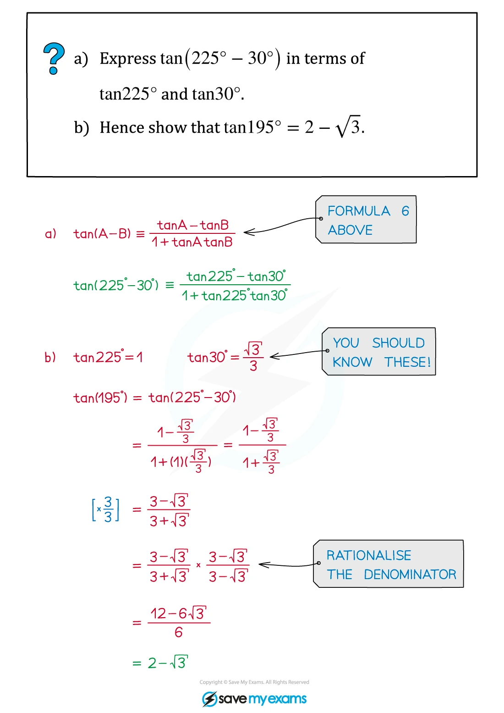
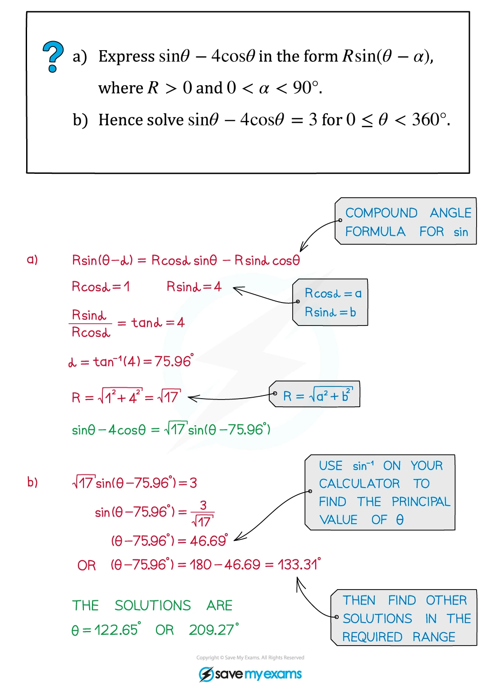
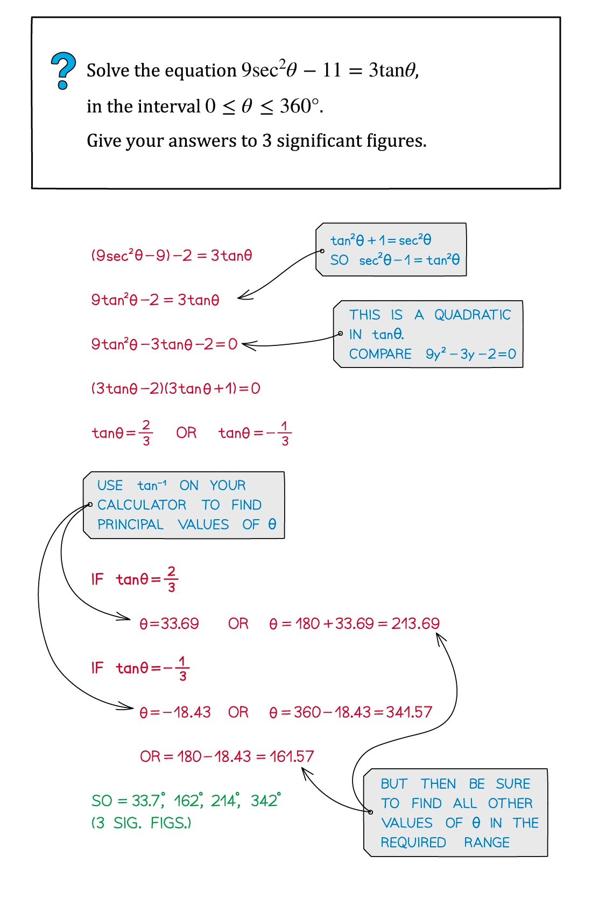
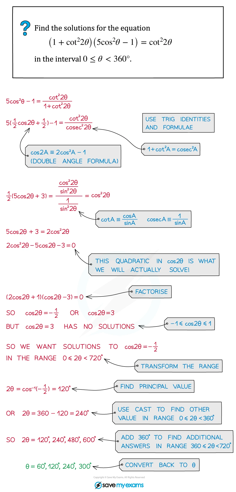
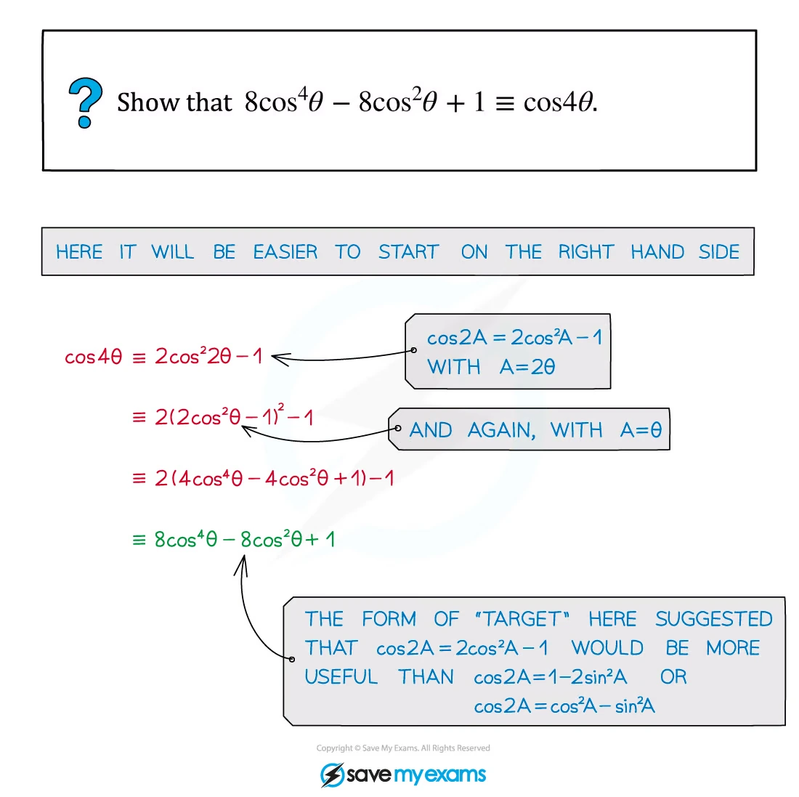

2.3 Trigonometry
Six trigonometric functions · identities · compound angles · R-form
本页依据 9709 Mathematics 2026–2027 syllabus 2.3：理解 six trigonometric functions 的关系、性质与图像；使用恒等式进行化简、exact evaluation 和解方程；掌握 compound-angle、double-angle、以及 a\sin\theta+b\cos\theta 的 R-form。
工作区没有独立的 Paper 2 note PDF，因此 worked examples 使用同一套 Trigonometry note PDF 中的原始图片；每个例题单独成卡。真题全部来自本地 Paper 2 原始 PDF，题干只把 PDF 排版规范为 LaTeX，没有改写或编造题目。
1. Core knowledge
Six trigonometric functions
\tan\theta=\frac{\sin\theta}{\cos\theta},\qquad \cot\theta=\frac{\cos\theta}{\sin\theta},\qquad \sec\theta=\frac1{\cos\theta},\qquad \operatorname{cosec}\theta=\frac1{\sin\theta}.
对应的恒等式是
\sec^2\theta=1+\tan^2\theta, \qquad \operatorname{cosec}^2\theta=1+\cot^2\theta, \qquad \sin^2\theta+\cos^2\theta=1.
先检查定义域：\sec\theta 要求 \cos\theta\ne0，而 \operatorname{cosec}\theta 与 \cot\theta 要求 \sin\theta\ne0。
Worked example · Trigonometry note p.3

Graphs and periodicity
\sin(\theta+2\pi)=\sin\theta, \quad \cos(\theta+2\pi)=\cos\theta, \quad \tan(\theta+\pi)=\tan\theta.
\sec\theta 和 \operatorname{cosec}\theta 是 reciprocal graphs，必须标出 vertical asymptotes：\sec\theta 的 asymptotes 在 \cos\theta=0，\operatorname{cosec}\theta 的 asymptotes 在 \sin\theta=0。
Worked example · Trigonometry note p.7

Compound-angle and double-angle formulae
\begin{aligned} \sin(A\pm B)&=\sin A\cos B\pm\cos A\sin B,\\ \cos(A\pm B)&=\cos A\cos B\mp\sin A\sin B,\\ \tan(A\pm B)&=\frac{\tan A\pm\tan B}{1\mp\tan A\tan B},\\ \sin2A&=2\sin A\cos A,\\ \cos2A&=\cos^2A-\sin^2A=2\cos^2A-1=1-2\sin^2A,\\ \tan2A&=\frac{2\tan A}{1-\tan^2A}. \end{aligned}
Worked example · Trigonometry note p.12

Worked example · Trigonometry note p.15

R-form
a\sin\theta+b\cos\theta=R\sin(\theta+\alpha),
where
R=\sqrt{a^2+b^2},\qquad R\cos\alpha=a,\qquad R\sin\alpha=b.
For R\cos(\theta-\alpha) instead, use R\cos\alpha=a and R\sin\alpha=b when matching a\cos\theta+b\sin\theta.
Worked example · Trigonometry note p.19

Solving strategy
- 把 \sec,\operatorname{cosec},\cot 改写成 \sin,\cos，或乘以适当的 \sin\theta\cos\theta。
- 选择能把 equation 化成一个 basic trig equation 的 identity。
- 用题目指定的 interval 列出全部解；注意 \sin、\cos 和 \tan 的周期不同。
不要在最后一步丢掉 domain restriction，也不要只写 calculator 的 principal value。
Worked example · Trigonometry note p.10

Worked example · Trigonometry note p.24

Worked example · Trigonometry note p.28

Exact values and angle restrictions
要熟悉 0、\pi/6、\pi/4、\pi/3、\pi/2 的 exact values，并根据 quadrant 判断 signs。对于 reciprocal functions，必须同时排除
\cos\theta=0\quad\text{for }\tan\theta,\sec\theta, \qquad \sin\theta=0\quad\text{for }\cot\theta,\operatorname{cosec}\theta.
题目给出 restricted interval 时，先求 reference angle，再按周期和 quadrant 列出所有解；不能只保留 inverse calculator 的 principal value。
Double-angle rearrangements
根据目标形式选择 double-angle identity：
\cos2A=1-2\sin^2A=2\cos^2A-1,qquad \sin^2A=\frac{1-\cos2A}{2},qquad \cos^2A=\frac{1+\cos2A}{2}.
若 equation 可化成关于 \sin A、\cos A 或 \tan A 的 quadratic，先令该 ratio 为 u，解完后检查 u\in[-1,1]（对 sine/cosine）以及原方程的 excluded values。
Compound angles and R-form checks
使用 compound-angle formula 时先展开，再比较 \sin\theta 与 \cos\theta 的 coefficients。对
a\sin\theta+b\cos\theta=R\sin(\theta+\alpha),
必须满足 R=\sqrt{a^2+b^2}，并由 R\cos\alpha=a、R\sin\alpha=b 确定正确 quadrant。最后可用 maximum/minimum range [-R,R] 检查 equation 是否有解。
2. Verified Paper 2 past-paper questions
以下题目均已在本地 Paper 2 原始 PDF 及对应 mark scheme 中核对；题目没有因为数量不足而补造。表达式中的角度单位、区间和分数均保留原题信息。
Question 1 · 9709/22/O/N/20 Q1
Solve the equation
7\cot\theta=3\operatorname{cosec}\theta
for 0^\circ<\theta<90^\circ. [3]
Show detailed mark scheme answer
Use \cot\theta=\dfrac{\cos\theta}{\sin\theta} and \operatorname{cosec}\theta=\dfrac1{\sin\theta}:
7\frac{\cos\theta}{\sin\theta}=3\frac1{\sin\theta}.
Since 0^\circ<\theta<90^\circ, \sin\theta\ne0, so
7\cos\theta=3 \quad\Longrightarrow\quad \cos\theta=\frac37.
Therefore
\boxed{\theta=\cos^{-1}\left(\frac37\right)=64.6^\circ}.
There is no second solution in the given interval.PastPaper/2020/2020/9709_w20_qp_22.pdf, Q1, and matching mark scheme.
Question 2 · 9709/22/F/M/21 Q2
Solve the equation
\sec^2\theta\cot\theta=8
for 0<\theta<\pi. [5]
Show detailed mark scheme answer
Rewrite the left-hand side in terms of sine and cosine:
\sec^2\theta\cot\theta =\frac1{\cos^2\theta}\frac{\cos\theta}{\sin\theta} =\frac1{\sin\theta\cos\theta}.
Hence
\sin\theta\cos\theta=\frac18 \quad\Longrightarrow\quad \sin2\theta=\frac14.
Because 0<2\theta<2\pi,
2\theta=\sin^{-1}\left(\frac14\right) \quad\text{or}\quad 2\theta=\pi-\sin^{-1}\left(\frac14\right).
Thus
\boxed{\theta=0.126\text{ rad or }1.44\text{ rad}}
to 3 significant figures. Both values lie in (0,\pi).PastPaper/2021/2021/9709_m21_qp_22.pdf, Q2, and matching mark scheme.
Question 3 · 9709/21/O/N/20 Q6
It is given that 3\sin2\theta=\cos\theta where \theta is an angle such that 0^\circ<\theta<90^\circ.
Find the exact value of \sin\theta.
Find the exact value of \sec\theta.
Find the exact value of \cos2\theta. [2+2+2]
Show detailed mark scheme answer
Since \sin2\theta=2\sin\theta\cos\theta,
3(2\sin\theta\cos\theta)=\cos\theta.
Here 0^\circ<\theta<90^\circ, so \cos\theta\ne0. Divide by \cos\theta:
6\sin\theta=1 \quad\Longrightarrow\quad \boxed{\sin\theta=\frac16}.
Then
\cos^2\theta=1-\frac1{36}=\frac{35}{36},
and \cos\theta>0, so
\boxed{\sec\theta=\frac1{\cos\theta}=\frac6{\sqrt{35}}}.
Finally,
\cos2\theta=1-2\sin^2\theta =1-2\left(\frac16\right)^2 =\boxed{\frac{17}{18}}.PastPaper/2020/2020/9709_w20_qp_21.pdf, Q6, and matching mark scheme.
Question 4 · 9709/21/M/J/21 Q2
By first expanding \sin(\theta+30^\circ), solve the equation
\sin(\theta+30^\circ)\operatorname{cosec}\theta=2
for 0^\circ<\theta<360^\circ. [6]
Show detailed mark scheme answer
Expand the compound angle and use \operatorname{cosec}\theta=1/\sin\theta:
\frac{\sin\theta\cos30^\circ+\cos\theta\sin30^\circ}{\sin\theta}=2.
Therefore
\frac{\sqrt3}{2}+\frac12\cot\theta=2 \quad\Longrightarrow\quad \cot\theta=4-\sqrt3.
Equivalently,
\tan\theta=\frac1{4-\sqrt3}=\frac{4+\sqrt3}{13}.
The principal value is \tan^{-1}\left(\dfrac{4+\sqrt3}{13}\right)=23.793\ldots^\circ. Tangent is positive in quadrants I and III, so
\boxed{\theta=23.8^\circ,\ 203.8^\circ}.PastPaper/2021/2021/9709_s21_qp_21.pdf, Q2, and matching mark scheme.
Question 5 · 9709/22/M/J/21 Q3
Solve the equation
\sin(2\theta+30^\circ)=5\cos(2\theta+60^\circ)
for 0^\circ<\theta<180^\circ. [6]
Show detailed mark scheme answer
Expand both sides:
\frac{\sqrt3}{2}\sin2\theta+\frac12\cos2\theta =5\left(\frac12\cos2\theta-\frac{\sqrt3}{2}\sin2\theta\right).
Collect the sine and cosine terms:
3\sqrt3\sin2\theta-2\cos2\theta=0.
Dividing by \cos2\theta gives
\tan2\theta=\frac2{3\sqrt3}.
For 0^\circ<2\theta<360^\circ,
2\theta=21.0517\ldots^\circ \quad\text{or}\quad 201.0517\ldots^\circ.
Hence
\boxed{\theta=10.5^\circ,\ 100.5^\circ}.PastPaper/2021/2021/9709_s21_qp_22.pdf, Q3, and matching mark scheme.
Question 6 · 9709/22/F/M/22 Q4
- Show that
\sin2\theta\cot\theta-\cos2\theta\equiv1.
- Hence find the exact value of
\sin\frac16\pi\cot\frac1{12}\pi.
- Find the smallest positive value of \theta (in radians) satisfying
\sin2\theta\cot\theta-3\cos2\theta=1.
[3+2+2]
Show detailed mark scheme answer
- Using \sin2\theta=2\sin\theta\cos\theta and \cot\theta=\cos\theta/\sin\theta,
\sin2\theta\cot\theta-\cos2\theta =2\cos^2\theta-(\cos^2\theta-\sin^2\theta) =\cos^2\theta+\sin^2\theta =1.
- Put \theta=\dfrac{\pi}{12} into the identity. Since 2\theta=\dfrac\pi6,
\sin\frac\pi6\cot\frac\pi{12}-\cos\frac\pi6=1.
Therefore
\boxed{\sin\frac\pi6\cot\frac\pi{12}=1+\frac{\sqrt3}{2}}.
- From part (a), \sin2\theta\cot\theta=1+\cos2\theta. Thus
1+\cos2\theta-3\cos2\theta=1 \quad\Longrightarrow\quad \cos2\theta=0.
The smallest positive solution is 2\theta=\dfrac\pi2, so
\boxed{\theta=\frac\pi4}.PastPaper/2022/2022/9709_m22_qp_22.pdf, Q4, and matching mark scheme.
Question 7 · 9709/21/M/J/22 Q2
- Express the equation
7\tan\theta+4\cot\theta-13\sec\theta=0
in terms of \sin\theta only.
- Hence solve the equation for 0^\circ<\theta<360^\circ. [3+3]
Show detailed mark scheme answer
Multiply the equation by \sin\theta\cos\theta:
7\sin^2\theta+4\cos^2\theta-13\sin\theta=0.
Using \cos^2\theta=1-\sin^2\theta,
3\sin^2\theta-13\sin\theta+4=0.
This is the required form for (a). For (b), solve the quadratic:
\sin\theta=\frac{13\pm\sqrt{169-48}}6 =\frac{13\pm11}6.
The value \sin\theta=4 is impossible, so \sin\theta=\dfrac13. In 0^\circ<\theta<360^\circ, sine is positive in quadrants I and II:
\boxed{\theta=19.5^\circ,\ 160.5^\circ}.PastPaper/2022/2022/9709_s22_qp_21.pdf, Q2, and matching mark scheme.
Question 8 · 9709/21/O/N/21 Q7
- By first expanding \cos(2\theta+\theta), show that
\cos3\theta\equiv4\cos^3\theta-3\cos\theta.
- Find the exact value of
2\cos^3\left(\frac5{18}\pi\right)-\frac32\cos\left(\frac5{18}\pi\right).
[3+2]
Show detailed mark scheme answer
- Expand:
\begin{aligned} \cos(2\theta+\theta) &=\cos2\theta\cos\theta-\sin2\theta\sin\theta\\ &=(2\cos^2\theta-1)\cos\theta-2\sin^2\theta\cos\theta\\ &=(2\cos^3\theta-\cos\theta)-2(1-\cos^2\theta)\cos\theta\\ &=4\cos^3\theta-3\cos\theta. \end{aligned}
Therefore the identity is proved.
- Let x=\dfrac5{18}\pi. The expression is
2\cos^3x-\frac32\cos x =\frac12(4\cos^3x-3\cos x) =\frac12\cos3x.
Since 3x=\dfrac56\pi,
\boxed{\frac12\cos\frac56\pi=-\frac{\sqrt3}{4}}.PastPaper/2021/2021/9709_w21_qp_21.pdf, Q7, and matching mark scheme.
Question 9 · 9709/22/O/N/22 Q1
Solve the equation
\sec\theta=5\operatorname{cosec}\theta
for 0^\circ<\theta<360^\circ. [4]
Show detailed mark scheme answer
Use \sec\theta=1/\cos\theta and \operatorname{cosec}\theta=1/\sin\theta:
\frac1{\cos\theta}=\frac5{\sin\theta} \quad\Longrightarrow\quad \sin\theta=5\cos\theta \quad\Longrightarrow\quad \tan\theta=5.
The principal value is
\tan^{-1}5=78.690\ldots^\circ.
Tangent is positive in quadrants I and III, so the two solutions are
\boxed{\theta=78.7^\circ,\ 258.7^\circ}.PastPaper/2022/2022/9709_w22_qp_22.pdf, Q1, and matching mark scheme.
Question 10 · 9709/22/M/J/22 Q8
- Express
3\sin2\theta\sec\theta+10\cos(\theta-30^\circ)
in the form R\sin(\theta+\alpha) where R>0 and 0^\circ<\alpha<90^\circ. Give the value of \alpha correct to 2 decimal places.
- Hence solve the equation
3\sin4\beta\sec2\beta+10\cos(2\beta-30^\circ)=2
for 0^\circ<\beta<90^\circ. [6+3]
Show detailed mark scheme answer
- Since \sin2\theta=2\sin\theta\cos\theta,
3\sin2\theta\sec\theta=6\sin\theta.
Also,
10\cos(\theta-30^\circ) =10\left(\frac{\sqrt3}{2}\cos\theta+\frac12\sin\theta\right) =5\sqrt3\cos\theta+5\sin\theta.
So the expression becomes
11\sin\theta+5\sqrt3\cos\theta.
For R\sin(\theta+\alpha)=R\sin\theta\cos\alpha+R\cos\theta\sin\alpha,
R=\sqrt{11^2+(5\sqrt3)^2}=14,
and
\tan\alpha=\frac{5\sqrt3}{11}.
Therefore
\boxed{R\sin(\theta+\alpha)=14\sin(\theta+\alpha)}, \qquad \boxed{\alpha=38.21^\circ}.
- Use the result in (a) with \theta=2\beta:
14\sin(2\beta+38.213\ldots^\circ)=2,
so
\sin(2\beta+38.213\ldots^\circ)=\frac17.
For 0^\circ<\beta<90^\circ, the angle 2\beta+38.213\ldots^\circ is between 38.213\ldots^\circ and 218.213\ldots^\circ. The only valid sine solution is
2\beta+38.213\ldots^\circ=180^\circ-\sin^{-1}\left(\frac17\right) =171.786\ldots^\circ.
Hence
\boxed{\beta=66.8^\circ}.PastPaper/2022/2022/9709_s22_qp_22.pdf, Q8, and matching mark scheme.
Question 11 · 9709/22/O/N/24 Q7(a–b)
- Express
4\sin\theta\sin(\theta+60^\circ)
in the form a+R\sin(2\theta-\alpha), where a and R are positive integers and 0^\circ<\alpha<90^\circ.
- Hence find the smallest positive value of \theta satisfying
\frac15+4\sin\theta\sin(\theta+60^\circ)=0.
[6+3]
Show detailed mark scheme answer
- Use 2\sin A\sin B=\cos(A-B)-\cos(A+B):
4\sin\theta\sin(\theta+60^\circ) =2\cos60^\circ-2\cos(2\theta+60^\circ) =1+2\sin(2\theta-30^\circ).
Therefore
\boxed{a=1,\qquad R=2,\qquad \alpha=30^\circ}.
- Substitute the result from part (a):
\frac15+1+2\sin(2\theta-30^\circ)=0,
so
\sin(2\theta-30^\circ)=-\frac35.
Let \beta=\sin^{-1}(3/5)=36.8699\ldots^\circ. The first positive solution is obtained from
2\theta-30^\circ=180^\circ+\beta.
Hence
\theta=\frac{180^\circ+36.8699\ldots^\circ+30^\circ}{2} =123.4349\ldots^\circ,
and therefore
\boxed{\theta=123.4^\circ}.PastPaper/2024/2024/qp-202410-mathematics-p22.pdf, Q7(a–b), and matching mark scheme.